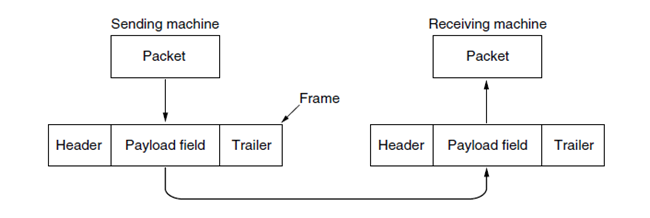

In the beginning, we are transferring a series of bits, either 0 or 1. Across all devices, this is the case. For this series of bits the connection requires a programmatic implementation. No matter how you connect PC to phone, phone to tablet, even headphones, it requires some software to somehow communicate between the devices.
Why? It is order. Cross compatibility between devices & connections requires an order of transfer. These bits have to be a specific order for the opposite computer, phone, tablet to interpret the bits correctly. This order of bits is known as a protocol.
Everything on the internet, even small wireless connections like Bluetooth, has protocols. Protocols are the life blood of the internet, giving way to the information highway.
Programmatically we can choose which protocol to use across a connection. When we specify the protocol, the data packet (a clump of bits) has what is known as a header.
Photo by Quliyevferman
The header tells the opposing device which protocol we are using, then proceeds to give the information AKA payload.
The Most Common Connection Type
The most common and widely used way to connect two devices is through a software implementation of connection called a socket. A socket abstracts all the hardware implementation of connecting two computers into one solid software framework.
Within the physical connections of Bluetooth, Wi-Fi, ethernet connections, sockets are consistent and always work under the same methodologies. Though I am sure there are other connection implementations, this is the most common.
Here is an example:
import bluetooth
# Create a Bluetooth socket
sock = bluetooth.BluetoothSocket(bluetooth.RFCOMM)
# Define the Bluetooth address of the remote device
remote_address = "XX:XX:XX:XX:XX:XX"
# Define the Bluetooth port number (RFCOMM channel) to use
port = 1
# Connect to the remote Bluetooth device
sock.connect((remote_address, port))
# Send and receive data over the Bluetooth socket
sock.send("Hello, Bluetooth!")
data = sock.recv(1024)
# Close the socket when done
sock.close()Notice the socket. This is what communication looks like when two computers connect.
How in the world are all computers & programming languages synced up to know how to handle sockets you might ask? It is a standard. There is an organization called the Internet Engineering Task Force (IETF) which manages the internet connections of the world.
Now, these standards can change and this group, IETF, can be shutdown. It is just a group of people. But they shape how software is programmatically made.
They shape the protocols.
In the End Its All the Same
When connecting over the internet, all programming languages do the same. They connect socket to socket (usually), transferring raw bits in a specific order.
At the lowest level there are a good number of socket implementations to choose from, though the top 3 most common are TCP, UDP & QUIC. These form the lowest frameworks over which raw bits can be transferred.
The reason we have TCP/UDP/QUIC is so we can implement our own protocols. Take a look:
@PacketDecoder(ClientPacket.KEY_PRESS)
public class KeyPress extends Packet {
private int keyCode;
private int time;
@Override
public Packet decodeAndCreateInstance(InputStream stream) {
KeyPress p = new KeyPress();
p.keyCode = stream.readByte();
p.time = stream.readTriByte();
return p;
}
public int getKeyCode() {
return keyCode;
}
public int getTime() {
return time;
}
}This is a keypress protocol, for detecting keys pressed. When a key is pressed, the information is placed in a group of bits and added to a TCP socket data packet. The packet is sent with a protocol layer on top of TCP. Within the stream(group of raw bits) implementation take a look at this:
public final class InputStream extends Stream {
//...
public byte readByte() {
return getRemaining() > 0 ? buffer.get() : 0;
}
public void readBytes(byte buffer[], int off, int len) {
for (int k = off; k < len + off; k++) {
buffer[k] = (byte) readByte();
}
}
}With our implementation here, we are using TCP's raw bits to read the 0s & 1s in a specific way. All TCP is doing is sending raw bits. It is up to us, the developer, to interpret raw bits in a specified order.
Custom protocols form the foundation of all computer networking. All protocols usually, like 90%+ of them, use TCP/UDP/QUIC.
These protocols must be written both on the client and server as decoders and encoders. Essentially, you need 4 implementations of a protocol, always.
You need a client-side encoder/decoder and a server-side encoder/decoder. All internet connections are made that way.
This is how MMORPGs, remote military simulations and ridiculously complex networking apps are made. They create their own protocols to communicate across the web using raw bits (sockets + TCP/UDP/QUIC).
Take a look at all the protocols AKA packet types this MMORPG has:
public enum ClientPacket {
KEEPALIVE(0, 0),
PLAYER_OP6(1, 3),
SOUND_EFFECT_MUSIC_ENDED(2, 4),
NPC_EXAMINE(3, 3),
IF_ON_IF(4, 16),
WORLD_MAP_CLICK(5, 4),
PLAYER_OP2(6, 3),
FC_SET_RANK(7, -1),
GROUND_ITEM_OP4(8, 7),
IF_OP4(9, 8),
SEND_PREFERENCES(10, -1),
RESUME_HSLDIALOG(11, 2),
//...
SEND_SIGN_UP_FORM(101, -2),
CHECK_EMAIL_VALIDITY(102, -2),
PLAYER_OP5(103, 3),
ClientPacket(int id, int size) {
this.id = id;
this.size = size;
}
}It has 103 protocols or packet types which connect the game client to the game server, each custom coded by a developer on top of TCP/UDP sockets.
They are used to form all the actions which can be done over the internet.
Why is this relevant? Because HTTP/HTTPS is just another custom coded packet type.
When you connect two computers over the internet, that beginning phrase in the URL "https://" is simply the specification of a custom protocol made by developers on top of UDP/TCP.
How a Website Is Made
Therefore a website is made by specifying an order of bits, in the order of HTTP. What transfers this order of bits? The TCP lower level protocol.
This order of bits in HTTP format takes an input copy of HTML/CSS/Javascript and transfers it, through TCP, to your computer. Your computer interprets this data and displays it as a webpage on your screen.
Typically, the HTML/CSS/Javascript is logically read, in HTTP ordered format, through a windowed software which uses a graphics API like OpenGL to render a web page. This is an internet browser.
Most browsers take the TCP bit stream and use OpenGL to create graphics on your window and create a website (including Chrome).
Because everything is standardized and uses the same protocols, you can very easily (if you already know how), make a website in any general language.
Each language supports sockets -> HTTP -> HTML/CSS/Javascript transfers and allows you to create a website in that language.
Just to show this off, I will show you how to write a web page in C++ using only a few lines:
#include "httplib.h"
int main() {
// Create an instance of the HttpServer
httplib::Server svr;
// Define a route to handle HTTP GET requests to the root path
svr.Get("/", [](const httplib::Request& req, httplib::Response& res) {
res.set_content("Hello, World!", "text/plain");
});
// Listen on port 8080
svr.listen("localhost", 8080);
return 0;
}This is a simple hello world web app using HTTP ordered bits. And, it is that simple to make web pages in all languages. It is just a matter of knowing/learning how. Plus it is quite fun.
They Are All Connected
By design all devices are connected. If it has a connection to the world wide web, it is connected. This is the nature of the internet.
The only thing stopping me from connecting to you is a soft security checkpoint. It is not even a hard security checkpoint, by hardware. It is programmatically inserted to the connection to stop would be attackers.
The physicality of the connection is still there. I, with the right credentials, will still be able to connect to you.
This is the entire point of ethical hacking, to circumvent that checkpoint. This is why they call it penetration testing. It is to penetrate the connection and access that device.
We are to use credentials we don't have to access computers we already have access to...
Anywho, I hope you learned something...
Happy coding!
Resources
MMORPG used here: https://github.com/DarkanRS/world-server